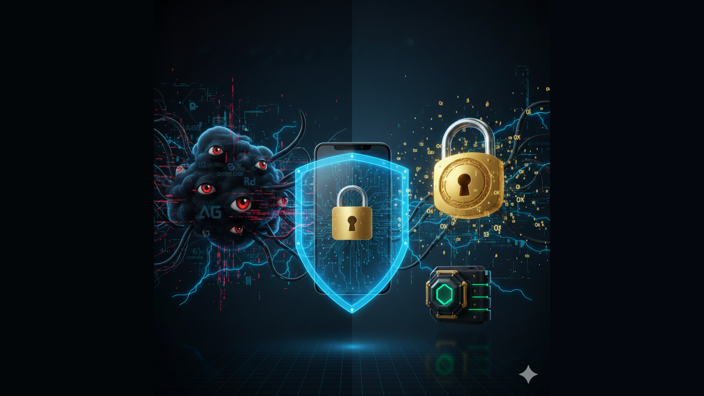

Seguran�a de Senhas no Celular: Por Que Armazenar Localmente — a Melhor Decis�o
Seu Celular Sabe Mais Sobre Voc� do Que Voc� Imagina
Voc� j� parou para pensar quantas senhas digita por dia no seu celular? E-mail, banco, redes sociais, aplicativos de trabalho... Cada uma dessas senhas — uma chave que abre uma porta para sua vida digital. Agora imagine se todas essas chaves estivessem penduradas em um mural p�blico, na "nuvem", onde qualquer um com acesso suficiente poderia copi�-las.
Parece exagero? Infelizmente, n�o �.
Este artigo explora uma decis�o arquitetural cr�tica que tomamos no desenvolvimento do aplicativo Ink Agenda: armazenar senhas de forma protegida no banco de dados LOCAL do dispositivo, ao inv�s de depender exclusivamente de servi�os em nuvem. Vamos entender por que isso importa para sua privacidade e seguran�a.
O Problema com a Nuvem: Quando a Conveni�ncia Vira Vulnerabilidade
A Ilus�o da Seguran�a na Nuvem
Quando voc� usa um servi�o de autentica��o em nuvem (como Firebase Auth, Auth0, ou similares), suas credenciais s�o transmitidas pela internet at� um servidor remoto. Este servidor valida suas credenciais e retorna um "token" de acesso.
Parece seguro, certo? Afinal, empresas como Google e Microsoft investem bilh�es em seguran�a. Mas h� problemas fundamentais que a maioria dos usu�rios ignora:
1. Intercepta��o de Tr�fego
Cada vez que voc� faz login, sua senha viaja pela internet. Mesmo com HTTPS, existem cen�rios onde essa comunica��o pode ser interceptada:
- Redes Wi-Fi p�blicas comprometidas
- Ataques "man-in-the-middle" em redes corporativas
- Certificados SSL fraudulentos
- Vulnerabilidades no pr�prio protocolo TLS
2. Vazamentos de Dados em Larga Escala
Grandes provedores de nuvem s�o alvos constantes de hackers. Alguns vazamentos hist�ricos incluem:
- Yahoo (2013-2014): 3 bilh�es de contas
- LinkedIn (2012): 164 milh�es de senhas
- Adobe (2013): 153 milh�es de registros
- Facebook (2019): 533 milh�es de usu�rios
3. Acesso Governamental e Corporativo
Provedores de nuvem est�o sujeitos a:
- Ordens judiciais para entregar dados de usu�rios
- Programas de vigil�ncia em massa (PRISM, XKeyscore)
- Pol�ticas internas que permitem acesso de funcion�rios
- Termos de servi�o que concedem direitos amplos sobre seus dados
O Que a Nuvem Sabe Sobre Voc�
Quando voc� usa autentica��o em nuvem, o provedor tem acesso a:
- Seu e-mail (identificador �nico)
- Endere�o IP (sua localiza��o aproximada)
- Tipo de dispositivo e sistema operacional
- Hor�rios de acesso (seus h�bitos)
- Frequ�ncia de uso (quanto voc� depende do servi�o)
- Padr�es de comportamento (an�lise de uso)
Essas informa��es, agregadas ao longo do tempo, criam um perfil detalhado da sua vida digital. E esse perfil tem valor comercial imenso.
A Solu��o Local: Seu Dispositivo, Suas Regras
Por Que Escolhemos Armazenamento Local
No Ink Agenda, tomamos uma decis�o arquitetural deliberada: ap�s o primeiro login bem-sucedido via servidor, armazenamos as credenciais de forma PROTEGIDA no banco de dados SQLite LOCAL do dispositivo.
Isso significa que:
- Funcionamento Offline: Voc� pode acessar o aplicativo mesmo sem internet. Seus dados e sua identidade permanecem dispon�veis.
- Menor Exposi��o — Rede: Ap�s o login inicial, n�o h� necessidade de enviar credenciais pela internet repetidamente.
- Controle Total: Seus dados de autentica��o ficam no SEU dispositivo, sob SEU controle.
Como Protegemos as Senhas Localmente
Armazenar senhas localmente seria extremamente perigoso se feito de forma ing�nua. Por isso, implementamos m�ltiplas camadas de prote��o:
Camada 1: Hash SHA-256
A senha NUNCA — armazenada em texto plano. Usamos o algoritmo SHA-256, que transforma qualquer senha em uma sequ�ncia de 64 caracteres hexadecimais:
"minhasenha123" ? "a5f3c2d1e9b8..."
Este processo — IRREVERS�VEL. N�o existe forma matem�tica de recuperar a senha original a partir do hash.
Camada 2: Salt �nico por Usu�rio
Mesmo com hash, existe um problema: duas pessoas com a mesma senha teriam o mesmo hash, permitindo ataques de "rainbow table". Por isso, adicionamos um "salt" (tempero) �nico para cada usu�rio:
hash = SHA256(senha + salt_�nico_do_usu�rio)
Assim, mesmo que dois usu�rios tenham a senha "123456", seus hashes ser�o completamente diferentes.
Camada 3: Armazenamento Seguro do SQLite
O banco SQLite fica em uma �rea protegida do sistema operacional:
- Android: pasta /data/data/[app]/ (acesso restrito)
- iOS: sandbox do aplicativo (isolado)
- Windows: pasta AppData do usu�rio
Sem root/jailbreak, outros aplicativos N�O conseguem acessar esses dados.
Camada 4: Criptografia do Sistema Operacional
Dispositivos modernos criptografam todo o armazenamento:
- Android: Full Disk Encryption (FDE) ou File-Based Encryption (FBE)
- iOS: Data Protection com Secure Enclave
- Windows: BitLocker ou Windows Hello
Mesmo que algu�m roube seu dispositivo, sem a senha de desbloqueio, os dados permanecem inacess�veis.
An�lise de Riscos: Comparando Cen�rios
Cen�rio 1: Autentica��o Apenas em Nuvem
Riscos:- Depend�ncia de conex�o com internet
- Exposi��o a vazamentos de dados em larga escala
- Vigil�ncia por parte do provedor de servi�o
- Vulnerabilidade a ataques de rede
- Implementa��o mais simples
- Sincroniza��o autom�tica entre dispositivos
- Recupera��o de senha via e-mail
Cen�rio 2: Autentica��o Apenas Local
Riscos:- Perda total de dados se dispositivo for perdido/danificado
- Sem sincroniza��o entre dispositivos
- Complexidade de gerenciamento de m�ltiplas instala��es
- Privacidade m�xima
- Funcionamento 100% offline
- Sem exposi��o a vazamentos externos
Cen�rio 3: Modelo H�brido (Nossa Escolha)
O Ink Agenda usa um modelo h�brido inteligente:
- Login inicial via servidor (valida��o centralizada)
- Cache de credenciais protegidas localmente (conveni�ncia + privacidade)
- Fallback para autentica��o offline (resili�ncia)
- Se o servidor cair ? login offline funciona
- Se o dispositivo for roubado ? hash + criptografia protegem
- Se a rede for comprometida ? credenciais n�o trafegam novamente
A Espionagem Que Voc� N�o V�
Big Tech e Seus Dados
As grandes empresas de tecnologia constru�ram imp�rios sobre um modelo de neg�cio simples: coletar dados, criar perfis, vender publicidade direcionada.
Quando voc� usa autentica��o de um provedor de nuvem gratuito, voc� n�o — o cliente. Voc� — o PRODUTO.
Google (Firebase Auth)
- Sabe quando voc� acessa cada aplicativo
- Correlaciona com sua conta Gmail, YouTube, Maps
- Cria um perfil para publicidade direcionada
- Pode ser obrigado a entregar dados ao governo americano
Facebook (Meta)
- Rastreia logins mesmo fora do Facebook
- Compartilha dados entre WhatsApp, Instagram, Messenger
- Hist�rico de esc�ndalos de privacidade (Cambridge Analytica)
Apple
- Melhor hist�rico de privacidade
- Mas ainda sujeito a ordens judiciais
- iCloud Backup pode incluir senhas
O Mito do "N�o Tenho Nada a Esconder"
Esta — a resposta mais comum quando se fala em privacidade. Mas considere:
- Voc� fecharia a porta do banheiro se n�o tivesse nada a esconder?
- Voc� daria suas senhas banc�rias para um estranho na rua?
- Voc� permitiria c�meras em todos os c�modos da sua casa?
Privacidade n�o — sobre esconder coisas erradas. — sobre ter CONTROLE sobre suas pr�prias informa��es.
Implementa��o T�cnica: Como Fizemos
Para desenvolvedores interessados, aqui est� um resumo da nossa implementa��o:
Estrutura do Banco de Dados (SQLite/Drift)
Tabela: users +-- uid (TEXT, PRIMARY KEY) +-- email (TEXT, UNIQUE) +-- display_name (TEXT, nullable) +-- photo_url (TEXT, nullable) +-- password_hash (TEXT) ? Hash SHA-256 da senha +-- password_salt (TEXT) ? Salt �nico de 32 caracteres +-- created_time (DATETIME) +-- last_sync (DATETIME)
Algoritmo de Hash
function hashPassword(password, salt):
data = password + salt
return SHA256(data).toHexString() // 64 caracteres
Fluxo de Autentica��o
1. Usu�rio digita email + senha 2. Tenta autenticar via API (servidor) 3. Se sucesso: a. Gera salt �nico (se novo usu�rio) b. Calcula hash = SHA256(senha + salt) c. Salva no SQLite local d. Retorna sucesso 4. Se API offline: a. Busca usu�rio no SQLite por email b. Calcula hash com salt armazenado c. Compara com hash armazenado d. Se igual, autentica��o offline OK
Migra��o de Schema
Para usu�rios existentes, implementamos migration autom�tica:
Migration v1 ? v2: - ALTER TABLE users ADD COLUMN password_hash TEXT - ALTER TABLE users ADD COLUMN password_salt TEXT - CREATE UNIQUE INDEX idx_users_email ON users(email)
Recomenda��es para Usu�rios
Boas Pr�ticas de Seguran�a
1. Use Senhas Fortes
- M�nimo 12 caracteres
- Misture mai�sculas, min�sculas, n�meros, s�mbolos
- Evite informa��es pessoais (datas, nomes)
- Use frases: "MeuCachorroLate3Vezes!"
2. Ative Bloqueio de Tela
- PIN de no m�nimo 6 d�gitos
- Biometria (impress�o digital, Face ID)
- Tempo de bloqueio autom�tico curto
3. Mantenha o Sistema Atualizado
- Atualiza��es incluem corre��es de seguran�a
- Ative atualiza��es autom�ticas
4. Cuidado com Redes P�blicas
- Evite fazer login em Wi-Fi de aeroporto/caf�
- Use VPN se necess�rio
5. Fa�a Backup Regularmente
- Backup local criptografado
- Evite backup em nuvem para dados sens�veis
Conclus�o: Privacidade — um Direito, N�o um Privil�gio
A decis�o de armazenar senhas localmente, de forma protegida, n�o — apenas uma escolha t�cnica. — uma declara��o de valores.
Acreditamos que:
- Seus dados pertencem a VOC�
- Voc� tem direito de funcionar OFFLINE
- A nuvem n�o precisa saber TUDO sobre voc�
- Seguran�a e conveni�ncia podem COEXISTIR
O Ink Agenda foi projetado com esses princ�pios em mente. Cada decis�o arquitetural considera n�o apenas o que — mais f�cil de implementar, mas o que — MELHOR para a privacidade e seguran�a dos nossos usu�rios.
Gloss�rio
- SHA-256: Algoritmo de hash criptogr�fico que produz uma sa�da de 256 bits (64 caracteres hexadecimais). — considerado seguro contra colis�es.
- Salt: Valor aleat�rio adicionado — senha antes do hash para prevenir ataques de rainbow table.
- SQLite: Banco de dados relacional leve, armazenado em um �nico arquivo, ideal para aplicativos m�veis.
- Drift: Biblioteca Flutter para acesso a banco de dados SQLite com seguran�a de tipos e gera��o de c�digo.
- Man-in-the-middle: Ataque onde um invasor intercepta comunica��es entre duas partes, podendo ler ou modificar mensagens.
- Rainbow Table: Tabela pr�-computada de hashes para senhas comuns, usada para quebrar hashes rapidamente.
- Sandbox: Ambiente isolado onde um aplicativo executa, sem acesso a dados de outros aplicativos.
Refer�ncias
- OWASP Password Storage Cheat Sheet
https://cheatsheetseries.owasp.org/cheatsheets/Password_Storage_Cheat_Sheet.html - NIST Digital Identity Guidelines (SP 800-63B)
https://pages.nist.gov/800-63-3/sp800-63b.html - Have I Been Pwned - Verificador de vazamentos
https://haveibeenpwned.com/ - Electronic Frontier Foundation - Privacy
https://www.eff.org/issues/privacy - SQLite Security Considerations
https://www.sqlite.org/security.html
Hashtags
Contato
- E-mail: suporte@caracore.com.br
- Site: www.caracore.com.br
- LinkedIn: Cara Core Informática
Conecte-se conosco no LinkedIn para mais conte�dos sobre seguran�a, privacidade e inova��o em tecnologia!
Seguir no LinkedIn
Artigo publicado em 30 de janeiro de 2026
� 2026 Cara Core Informática. Todos os direitos reservados.